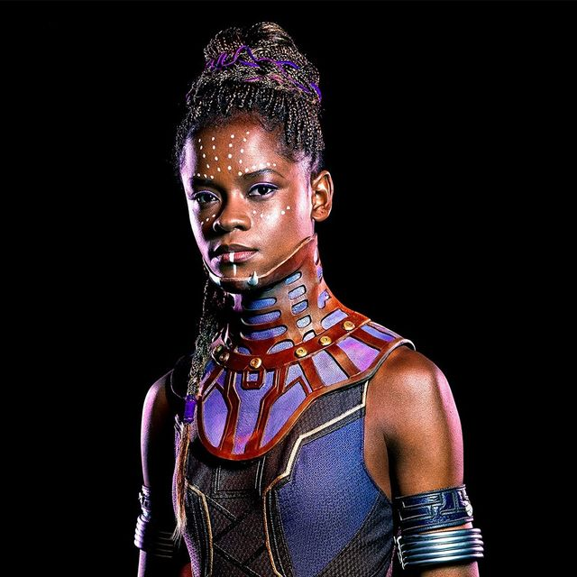

Shuri adalah karakter yang relatif baru dalam waralaba dan muncul pertama kali pada tahun 2005 di Black Panther Vol. 4 #2 dan dengan cepat mendapatkan penggemar yang setia. Sebagai bagian dari keluarga kerajaan, Shuri juga menerima banyak pendidikan tentang politik dan memerintah suatu bangsa. Selain itu dia juga sering menahan benteng sementara T'Challa pergi ke lapangan. Shuri juga bertanggung jawab untuk penelitian tentang Fisika Bayangan yaitu sebuah disiplin ilmiah yang sangat maju yang memungkinkan Shuri untuk menghancurkan fisika biasa untuk mengejar teknologi yang lebih maju.
Dalam Black Panther #10 yang ditulis oleh John Ridley dan seninya oleh Peralta Jerman, menceritakan bahwa T'Challa terluka parah dalam pertempuran dengan Prajurit Kerbau yang sangat kuat dan dunia lain. Sementara T'Challa dilarikan ke rumah hingga ke fasilitas medis darurat di Wakanda, Shuri melapor ke Captain America yang saat itu telah memberikan versi baru perisainya yang tidak terputus. Ketika Shuri mengambil tempat duduk di meja Avengers Captain Amerika berkata "Kau tahu... kursi itu secara teknis hanya untuk anggota Avengers." Shuri menanggapi, "Mungkin aku hanya prediksi." T'Challa telah kehilangan sejumlah besar kekuasaan dan pengaruhnya di Wakanda, sementara itu Shuri melewati Perang Saudara Wakanda relatif tanpa cedera dan masih mendapat dukungan dari sebagian besar orang (selama dia tidak mengklaim hak kerajaan untuk memerintah) dan telah berjuang bersama Avengers sebelumnya.